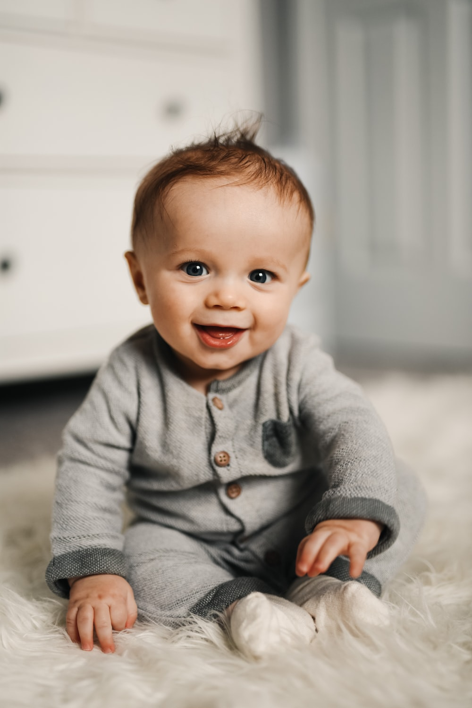
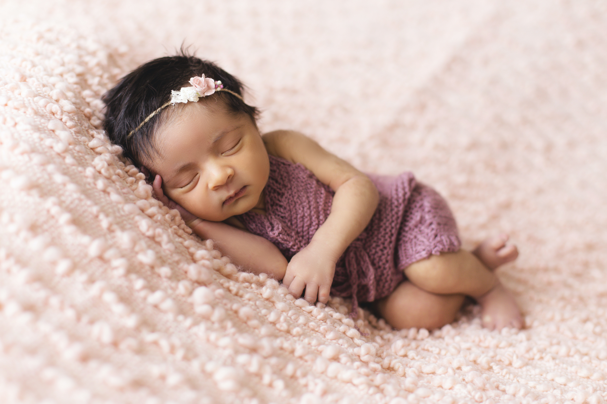

Background
The Buckman family was founded in 2017 when Liat and Akiva wed in 2016. They went on a honeymoon and saw the world. They flew to the moon and back. And then the family started to grow...
Dani
Dani was born in 2017. She cried a ton! But she was very cute. Here's a picture of her as a baby:
Her first words included:
- Ball
- Abba
- More
Maya
Maya was born only 16 months after. She was a fat baby. Here's a pic:
These were her favorite activies, in order:
- Pooping
- Laughing
- Sleeping
Tali
After a 3 year hiatus including a global pandemic, baby Tali was born. Picture time!
